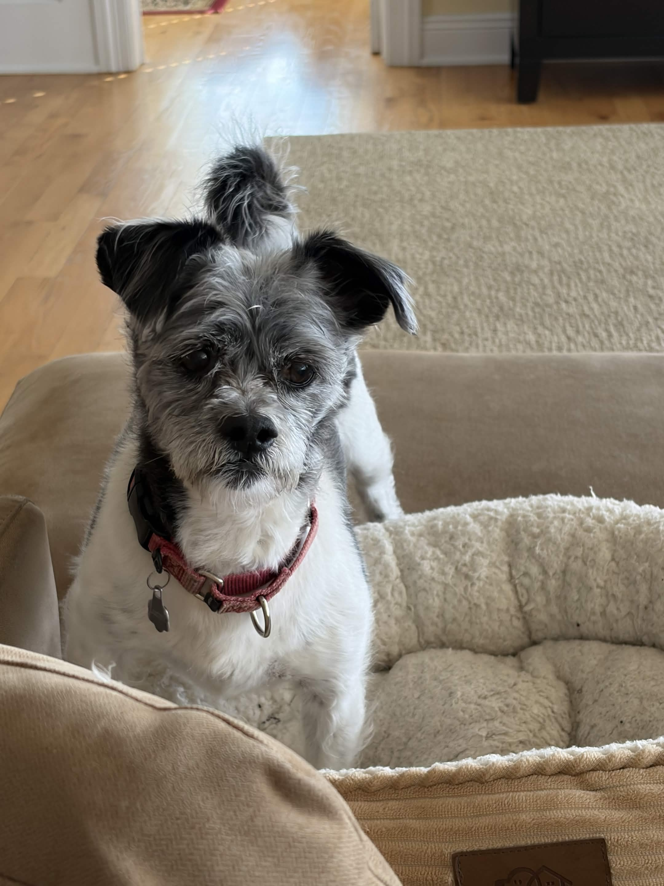
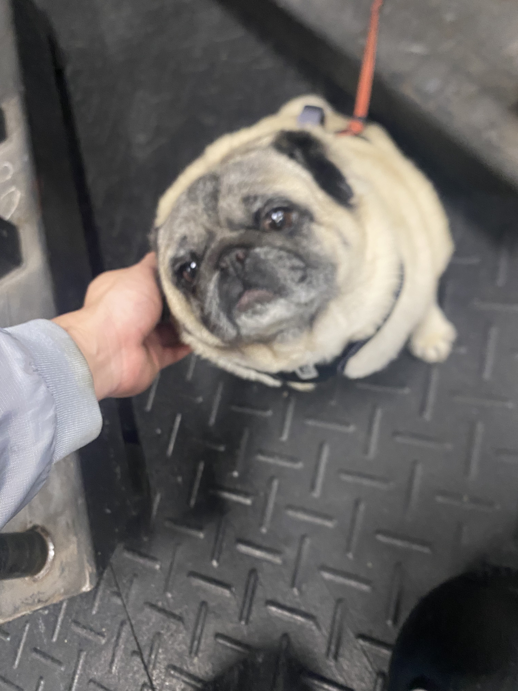
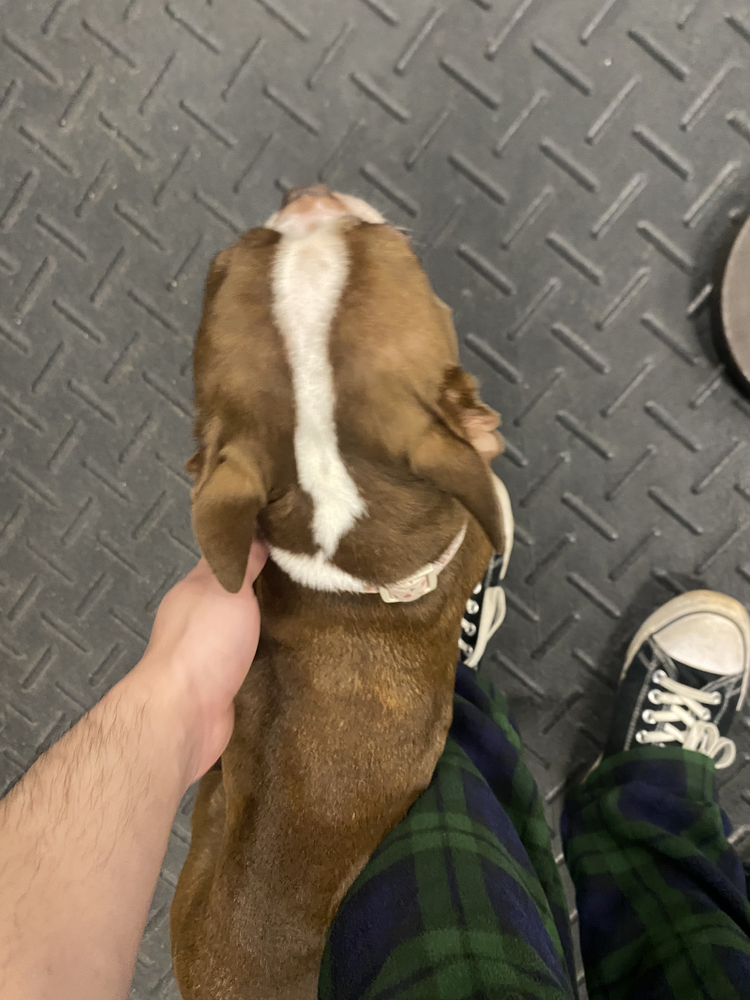
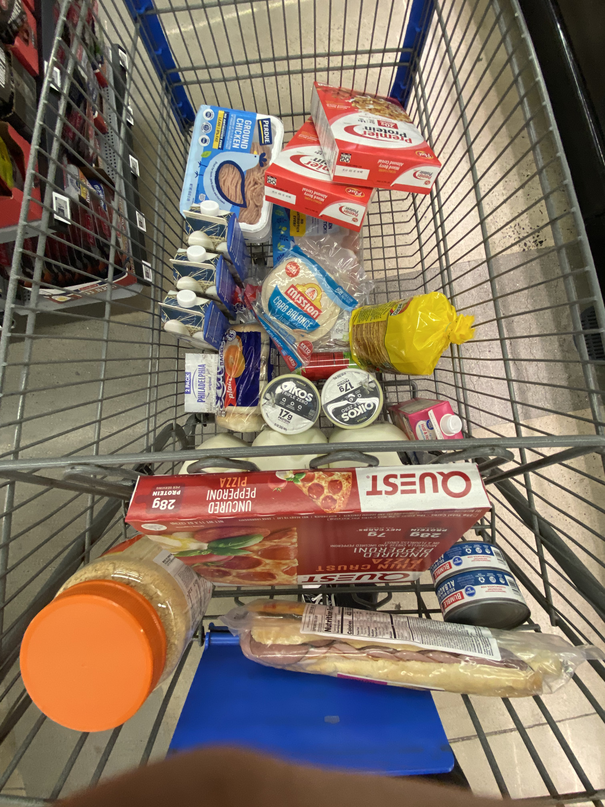

Lifter Association is imagined as a small editorial project dedicated to documenting
bodybuilding as both a gym-based practice and a daily way of living. The site combines
reviews, visual documentation, and location-based orientation to show how training,
recovery, equipment, food, and routine all connect. Marcos Sanchez serves as site editor,
shaping the overall direction while collaborating with a fictional team of specialty
contributors.
Contributor Profiles
Each contributor focuses on a different piece of the bodybuilding world so the site
reads more like a coordinated magazine than a single-author notebook.
Marcos Sanchez
Site Editor
Role in production: editorial planning, page design, and bodybuilding coverage coordination.
Marcos is the editor who defines the site’s tone and connects the project’s
different genres, from reviews to pictorial documentation and map-based content.
His approach centers on bodybuilding as a lived system rather than only a gym hobby.
He is especially interested in how discipline, visual culture, and training spaces
shape the everyday experience of lifting.

Lucky Jackobson
Training Writer and Equipment Reviewer
Role in production: writes gym-floor explainers and evaluates training tools.
Ana specializes in turning weight-room habits into readable guidance for newer lifters.
Her writing focuses on rack work, bar setup, machine usefulness, and the difference
between tools that simply exist in a gym and tools that genuinely support progress.
She gives the project its practical, training-first perspective.

Dante Mercer
Nutrition and Cutting Guide Editor
Role in production: shapes food, dieting, and recovery-oriented content.
Dante covers the off-site side of bodybuilding, especially meal choices, calorie
tradeoffs, and the routines that make cutting sustainable. He helps the project
explain how bodybuilding continues long after a workout ends. His editorial voice
keeps the site grounded in planning, recovery, and consistency.

Ivy Park
Gym Culture and Photo Archive Contributor
Role in production: curates visual material and interprets bodybuilding atmosphere.
Ivy treats the gym as a cultural environment filled with rituals, objects, and visual
cues that communicate belonging. She contributes documentary captions, image selections,
and short reflections on how spaces feel in addition to how they function. Her work
helps the site read as an archive of bodybuilding culture as much as a guide.
Project History
The site’s (very real) history tracks how a simple documentation project gradually became
a more layered editorial resource.
2024
Started as a Training Record
The project began as a way to document the most important gym spaces and tools
used in bodybuilding. Early notes focused on racks, benches, scale check-ins,
and the visual rhythm of recurring workouts.
2025
Expanded into Reviews and Pictorial Documentation
As the archive grew, the project added equipment reviews and image-based pages
to explain why certain tools, foods, and routines mattered. This phase shifted
the site from private note-taking toward a more public editorial format.
2026
Became a Mapped Editorial Hub
The current version connects locations, habits, and written analysis so readers
can move between the gym floor and the daily systems behind bodybuilding. The
result is a project that presents bodybuilding as both place-based training and
a routine that continues outside the gym.
One of the original training images that shaped the project’s gym-floor focus.

Later documentation expanded the project beyond the gym into food and planning.A routine diagram demonstrates the planning systems that connect workouts to everyday life.
Credits
Site portraits include one original portrait of Marcos Sanchez and three intentionally
designed illustrated placeholder portraits for fictional contributors. Project history
visuals reuse existing site images from the bodybuilding archive, including gym, diet,
and routine materials produced for this project.